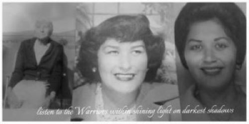
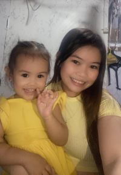
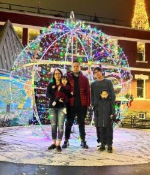
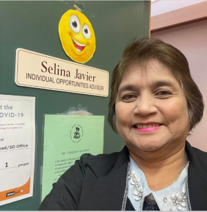

About Me
My english name is "Selina Javier", and my traditional name is "Si'luk'siye". I am a Cowichan Tribes Member. My parents are late Muriel Anne Rice and Jerry Morales. My Grandparents are late Mary Johnnie and late Ernie Rice Sr. My Great Grandparents are late Abraham and Ellen Johnnie.
I have had a unique journey to where I am today. I come from humble beginnings, with deep roots in Cowichan,
Family is everything to me.
My multicultural background has allowed me to work and prosper in culturally deverse environments.

I have been blessed with four wonderful children, daughter-in-laws, grandchildren and a husband that I have been with for 35 years.


 
My Values
Seeks guidance from elders
Maintain cultural awareness
Communicate openly and honestly
Treat people with dignity, respect, and fairness
Unite and flexible in how we work together
My Educational Background
Bachelor of Science in Business Administration
Bachelor Degree in Child and Youth Care
Career Development Practitioner Certificate
Life Skills Coach Advanced Certificate
Fundamentals:Introduction to Computers in Today's World
Foundations in Innovation and Technology
Work Experiences
Previous Band Social Development Worker
15 years' experience working with our community building a strong foundation and trusting relationship through the Individual opportunities Program (IOP)
Reaching out to our community providing education and employment/training support
Managing budgets, proposals, capacity building
Providing one on one support and guidance

I found working with the IOP Program to be very rewarding. I value the time I have spent with each community member